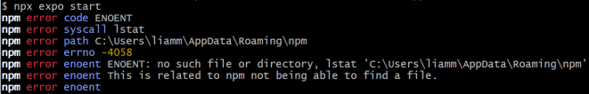
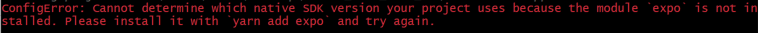

Try the following to very (you may need to add Node.js to your path):
node -v
npm -v
npx -v
Running npx expo start from inside "mobile-app" will start the app
To Run: You can either...
Download the Expo Go app on your phone and scan the QR code(since they want Android, final visual testing should probably be through an Android or emulated Android)
Start your simulator from "Android Studio" or "Orbit" (would reccommend) and hit a in your terminal to launch
Potential Issues:
I found these issues by trying to run this project inside a virtual machine. There are possibly other issues you may encounter.

Try: npm install -g npm@latest

Try: npm install expo
Project Structure (and details):
src/
├─ app/
│ ├─ _layout.tsx - App entry point, displays index
│ ├─ MessagePage.tsx - Main page
│ ├─ apiUtils.tsx - Contains functions that talk to backend
│ ├─ constants.tsx - For shared values (like the backend url)
│ ├─ styles.tsx - Contains the styles (might want to refactor)
│ └─ __tests__/ - Houses unit tests
│ ├─ MessagePage.test.tsx
│ └─ apiUtils.test.tsx
├─ assets/ - Fonts and Images
└─ components/
├─ ListItem.tsx - Component for displaying each post
├─ AddPostModal.tsx - Component for the "Add Post" UI
└─ __tests__/ - Houses tests
├─ ListItem.test.tsx
└─ AddPostModal.test.tsx
This project uses .tsx (TypeScript with JSX) files, so I would reccommend familiarizing yourself with TypeScript (at leaste a little)
This project uses React and React Native as the main skeleton, so I would reccommend familiarizing yourself with those as well
The backend URL is currently configured to hit a fake api
For integration testing, this will have to be changed to the dokku URL
Documentation:
Since we are using Expo Go instead of Flutter, we can't use dartdoc for documentation purposes. It has been decided (given that we are using .tsx) that we will use TypeDoc for documentation purposes.
"tsconfig.json" contains the configuration for TypeDoc (including the entry point and output directory) in the "typedocOptions" field.
To generate documentation, run npx typedoc
The generated documentation will be in the "docs" folder
Main Commands:
npx expo start - Start the app
npm test - Run tests (I would reccommend using the "Jest" extension in VSCode)